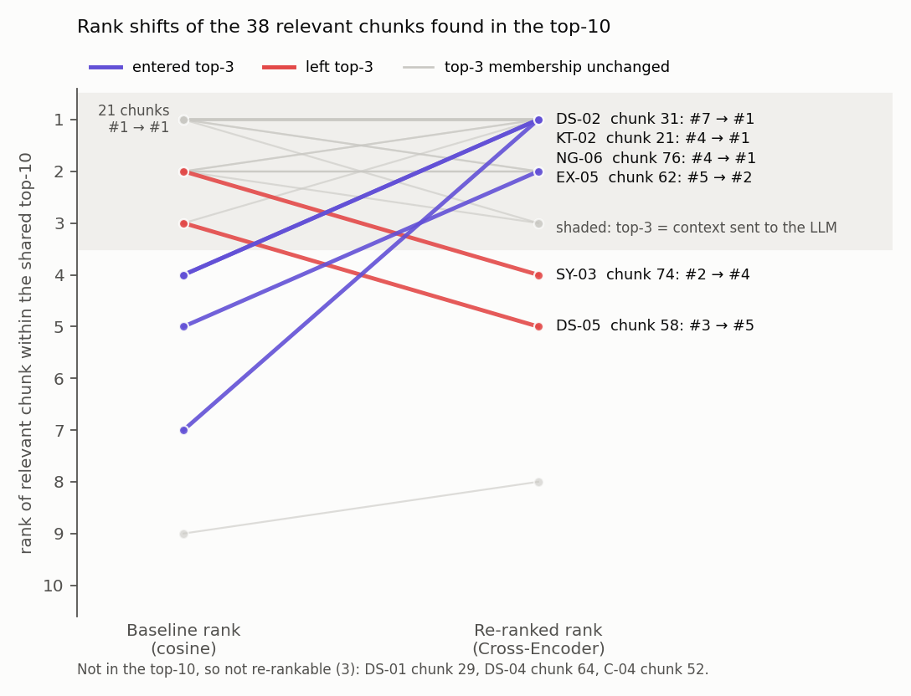
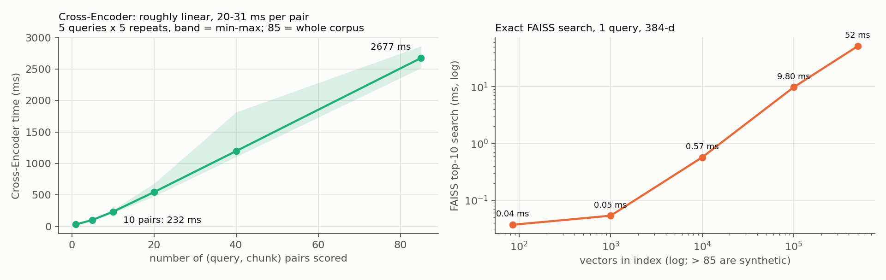

For this assignment, I used a 25-page PDF containing the IIT Madras Ordinances and Regulations for B.Tech and B.Tech (Honours), covering the 2010–2014 batches. I chose this document because it contains similar credit tables for different batches and rules with exceptions, making it useful for testing retrieval errors.
I extracted the text using PyMuPDF, preserving the tables and their headings, and used LangChain's RecursiveCharacterTextSplitter to create 85 chunks of up to 1000 characters with a 200-character overlap.
| Component | Choice |
|---|---|
| Bi-Encoder + Vector Store | all-MiniLM-L6-v2, FAISS IndexFlatIP, top 10 |
| Cross-Encoder | cross-encoder/ms-marco-MiniLM-L-6-v2 |
| LLM | Gemini 2.5 Flash via Vertex AI, temperature 0, top-p 1, seed 42 |
In Pipeline 1, I passed the top 3 chunks retrieved by the Bi-Encoder to Gemini to generate Answer 1. In Pipeline 2, I re-ranked the same top 10 chunks using the Cross-Encoder and passed the new top 3 to Gemini to generate Answer 2. Both pipelines used the same chunks, LLM and prompt to ensure a fair comparison.
For evaluation, I used 33 questions covering keyword traps, exceptions, negations, synonym mismatches, document-specific cases and easy control questions. The 33 questions included 6 keyword traps, 6 exceptions, 6 negations, 6 synonym mismatches, 5 document-specific questions, and 4 easy controls. One of the negation questions (NG-06) was added after a separate retrieval-only screening of 24 negation phrasings; the other 23 screened phrasings are not part of the evaluation set. I identified the relevant chunks using supporting text from the PDF and compared the generated answers with reference answers, classifying them as correct, partially correct or insufficient context.
I measured retrieval performance using Recall@3, Hit@3, MRR@10 and Evidence Coverage@3 to evaluate how well relevant information was retrieved and ranked. I also checked for rescues, where re-ranking brought relevant chunks into the top 3, and regressions, where relevant chunks were pushed out of the top 3.
A Bi-Encoder converts the query and document chunks into separate embeddings and compares them using cosine similarity. Since the chunk embeddings can be generated beforehand, retrieval is fast. However, representing each chunk using a single vector can sometimes cause the model to miss details like negations, exceptions, or differences between similar rules.
A Cross-Encoder processes the query and chunk together, allowing it to compare them more closely using token-level attention. This helps it identify chunks that actually answer the question rather than just having similar keywords. However, each query-chunk pair needs to be processed at query time, making it slower.
For example, in KT-02, I asked about the CGPA required to opt for B.Tech (Honours) and when a student can opt for it. The Bi-Encoder ranked chunk 84, which discusses the CGPA needed to receive the degree, above chunk 21, which contains the actual eligibility rule. After re-ranking, the Cross-Encoder moved chunk 21 from rank 4 to rank 1, showing how re-ranking can help distinguish between similar but different rules.
| Chunk | Content | Cosine | Base rank | CE logit | New rank |
|---|---|---|---|---|---|
| 78 | NCC / NSO rules (mentions Honours) | 0.750 | 1 | 2.37 | 3 |
| 84 | R.30.1: maintain CGPA 8.5 for the award (distractor) | 0.723 | 2 | 1.96 | 5 |
| 33 | Honours credit requirements | 0.706 | 3 | 1.83 | 6 |
| 21 | R.1.12: CGPA ≥ 8.5 after sem. 3, opt during sem. 4 | 0.673 | 4 | 4.33 | 1 |
| 12 | O.5: opt "at the end of the fourth semester" | 0.638 | 8 | 4.14 | 2 |
| Pipeline | Recall@3 | Hit@3 | MRR@10 | Evidence Coverage@3 |
|---|---|---|---|---|
| Baseline | 0.818 | 0.848 | 0.801 | 0.836 |
| Re-ranked | 0.879 | 0.909 | 0.863 | 0.894 |
The results show that re-ranking improved all four retrieval metrics. Recall@3 increased from 0.818 to 0.879, while Hit@3 increased from 0.848 to 0.909. Recall@10 remained the same at 0.939 because both pipelines used the same initial top 10 chunks.
Across the 33 questions, 7 improved, 22 remained unchanged, and 4 worsened based on Evidence Coverage@3 and MRR@10. A question counted as improved or worsened if its Evidence Coverage@3 changed, or, when coverage stayed the same, if its MRR@10 changed; this does not by itself reflect changes in the generated answers. However, only some of these changes affected the actual top-3 evidence. I identified 4 rescues, where relevant chunks moved into the top 3, and 2 regressions, where relevant chunks moved out. These cases are summarized in the table below and discussed in the following sections.
| Case | Failure type | Relevant chunk | Bi rank | CE rank | Top-3 before → after | Answer 1 → Answer 2 |
|---|---|---|---|---|---|---|
| KT-02 | Keyword trap | 21 (R.1.12) | 4 | 1 | [78, 84, 33] → [21, 12, 78] | declined → correct |
| EX-05 | Exception | 61 / 62 | 1 / 5 | 1 / 2 | [61, 60, 58] → [61, 62, 60] | clause omitted → correct |
| NG-06 | Negation | 76 (R.25.1 tail) | 4 | 1 | [25, 75, 46] → [76, 59, 75] | wrong "no rule" → correct |
| DS-02 | Near-identical tables | 31 (2013+ table) | 7 | 1 | [33, 30, 32] → [31, 33, 29] | declined → correct |
| SY-03 | Synonym (regression) | 75 / 74 | 1 / 2 | 3 / 4 | [75, 74, 59] → [48, 72, 75] | correct → declined |
| DS-05 | Table lookup (regression) | 58 | 3 | 5 | [60, 61, 58] → [60, 59, 61] | correct → declined |

This question asked about the CGPA and timing required to opt for B.Tech (Honours). The Bi-Encoder retrieved chunks about receiving the degree rather than opting for it.
Answer 1: "To be awarded the B.Tech (Honours) degree, students must maintain an average CGPA of 8.5 [Chunk 84] … The provided context does not specify when a student can opt …"
Answer 2: "A student needs a CGPA of 8.5 and above at the end of their third semester … [Chunk 21] … They can opt … during the fourth semester [Chunk 21]."
Re-ranking moved the correct chunk from rank 4 to rank 1, allowing Gemini to answer correctly. However, another chunk mentioned opting at the end of the fourth semester. Gemini mentioned both versions in 2 out of 5 runs, suggesting a possible inconsistency in the document.
This question asked whether attendance below 85% could be condoned for a hospitalised student. The rule requires actual attendance above 40% and notional attendance of at least 85% after excluding illness days.
The Bi-Encoder ranked the chunk containing the second condition fifth, so Answer 1 mentioned only the 40% requirement. After re-ranking, that chunk moved to rank 2, and Answer 2 included both conditions. This shows how missing even one important condition can make an answer incomplete.
This question asked which courses a student cannot repeat. The rule states that successfully completed courses cannot be repeated, with an exception from 2014–15 for certain students below CGPA 5.
The Bi-Encoder ranked unrelated restrictions higher, leaving the correct chunk at rank 4. Answer 1 incorrectly stated that no such restriction was mentioned. Re-ranking moved the correct chunk to rank 1, and Answer 2 included the rule and its exception. I found this case after testing 24 negation phrasings, since the original questions did not show this failure.
This question asked about HPF credits for the 2013 batch onwards. Since the document contains similar credit tables for different batches, the Bi-Encoder ranked the correct table seventh, and Answer 1 could not answer.
The Cross-Encoder moved it to rank 1, allowing Answer 2 to correctly identify 4 HPF credits, rather than the earlier batch's requirement of 2.
Re-ranking also caused two failures. In SY-03, the question used "dispute a grade", while the document used "feels aggrieved" and mentioned contacting the teacher within three weeks. The relevant chunk dropped to rank 4, so Answer 2 could not answer.
In DS-05, the correct answer ("G" for 90% attendance) was in a table, but the Cross-Encoder ranked other attendance passages higher. Answer 2 again could not answer. This suggests the model may struggle with short tables or differently worded rules, although I did not test this separately.
In all four rescue cases, relevant chunks moved from ranks 4–7 into the top 3. Answer 1 was incomplete or incorrect, while Answer 2 was correct in all four cases.
I tested each of the six cases five times per pipeline (60 LLM calls). The correctness classification remained consistent across runs. I also found one citation error in NG-06, where Answer 2 cited page 22 instead of page 23.
Components were timed with time.perf_counter() after warm-up: retrieval on 33 questions × 5 repeats, generation on 15 paired runs. Model loading and indexing are excluded; 6 rate-limited API attempts were retried and not counted.
| Component | n | Mean (ms) | Median (ms) |
|---|---|---|---|
| Query embedding (Bi-Encoder) | 165 | 10.2 | 10.0 |
| FAISS top-10 search (85 vectors) | 165 | 0.07 | 0.07 |
| Cross-Encoder scoring (10 pairs) | 165 | 265.0 | 253.3 |
| Sort by CE score + top-3 | 165 | 0.02 | 0.02 |
| Pipeline 1 retrieval side | 165 | 10.3 | 10.0 |
| Pipeline 2 retrieval side | 165 | 275.4 | 264.0 |
| Gemini generation, Answer 1 / Answer 2 | 15 | 4465 / 5746 | 4474 / 3256 |
| Pipeline 1 / Pipeline 2 end-to-end | 15 | 4496 / 6035 | 4510 / 3505 |
Re-ranking adds about 265 ms per query, making the retrieval side roughly 27× slower. Almost all of this extra time came from the Cross-Encoder scoring the ten query-chunk pairs. End to end, Gemini's 3–4.5 s dominates and re-ranking is under 5% of Pipeline 2's total. The end-to-end ratios point in opposite directions (P2 faster by median, slower by mean) because one Answer 2 call took 26 s and Answer 1 alone ranged 1.8–9.2 s; network variance is far larger than the re-ranking cost, so the end-to-end difference is not statistically resolved. A GPU would shrink the Cross-Encoder step; a larger candidate pool would grow it linearly.
The Cross-Encoder needs to process every query-chunk pair, so its processing time increases with the number of chunks. In my experiment, scoring 1 pair took around 31 ms, 10 pairs took 232 ms, and all 85 chunks took 2.68 seconds, which is already close to the time taken by a Gemini call. Using the measured processing time (around 32 ms per pair) as a rough estimate, scoring 1,000 chunks would take around 32 seconds, 10,000 chunks around 5 minutes, and 100,000 chunks nearly 53 minutes per query on the same CPU.
The Bi-Encoder is faster because the document embeddings are computed beforehand. Even an exact FAISS search over 100,000 synthetic vectors took only 9.8 ms. Approximate indexes like IVF and HNSW can improve scaling further. For 100,000 chunks, the estimated time for two-stage retrieval is 10 ms for query embedding + 10 ms for FAISS search + 253 ms for re-ranking = approximately 0.27 seconds per query.

This is why I used the Bi-Encoder to retrieve the top 10 chunks and the Cross-Encoder to re-rank only those candidates, instead of scoring the entire collection.
However, re-ranking can only work with chunks retrieved in the first stage. For example, in C-04, the relevant sentence was at the end of a chunk about contact courses, but that chunk did not appear in the initial top 10, so both pipelines failed. Recall@10 was 0.939, meaning some relevant evidence was still missed during initial retrieval and could not be recovered through re-ranking.
Conclusion. In this experiment, Cross-Encoder re-ranking helped with the failure types it was meant to address: a keyword distractor, an exception clause, a negated rule and a near-duplicate table were all rescued from ranks 4–7, and each answer went from declining or omitting a condition to correct. It also caused two regressions, on table data and paraphrased wording, and could not help when evidence was outside the top-10. At about 0.27 s per query on a CPU, it is cheap next to LLM generation, while scoring the whole collection would grow linearly and quickly become impractical. Re-ranking a small candidate set is a good trade-off for precision-critical documents like regulations, provided first-stage recall is monitored.